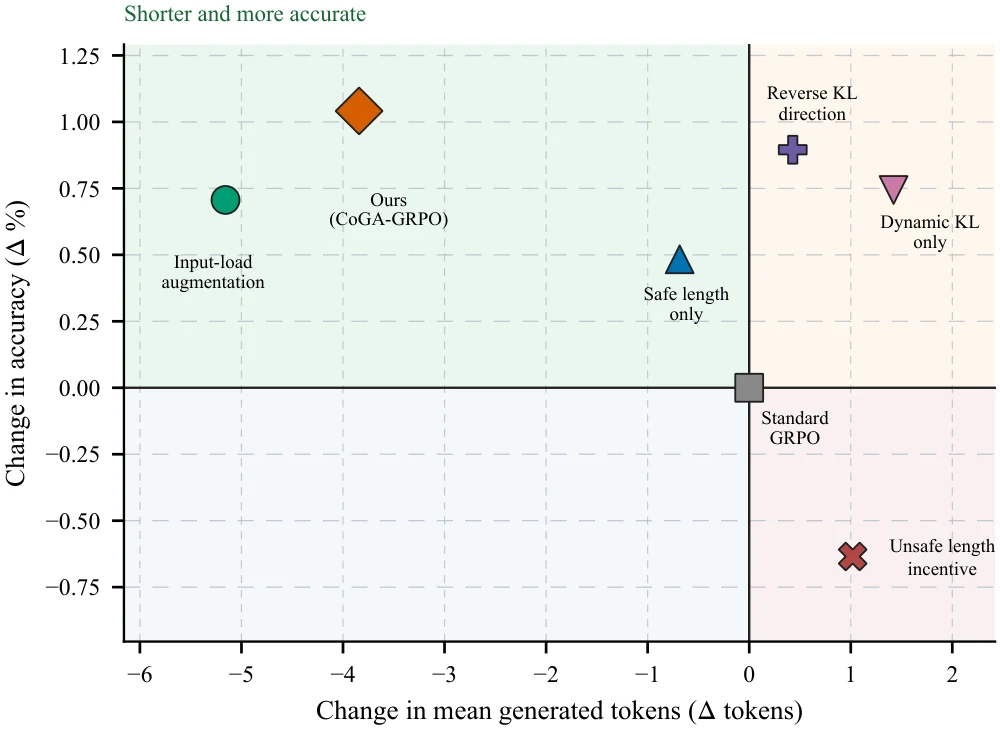

Score the rollout group
Sample six completions per prompt. Convert answer scores into correctness indicators and use their group mean p to compute the main allocation score.
Mq = 0.8(1 − pq2)
CoGA-GRPO
Use rollout correctness to coordinate KL regularization and response-length shaping in group relative policy optimization.
CoGA-GRPO uses one allocation score derived from sampled answers to adjust the strength of KL regularization and determine which groups are eligible for length shaping. Within eligible groups, a bounded reward adjustment favors shorter correct responses that pass an answer-score margin. The matched IntentBench comparison initializes both variants from the same reproduced Qwen2.5-Omni-7B structured-reasoning checkpoint.

Sample six completions per prompt. Convert answer scores into correctness indicators and use their group mean p to compute the main allocation score.
Mq = 0.8(1 − pq2)
Groups with a larger allocation score receive a smaller KL penalty coefficient relative to the frozen reference policy.
Within eligible groups, correct responses that pass the score margin receive a bounded adjustment based on length relative to the group mean.
| Measure | Standard GRPO | CoGA-GRPO |
|---|---|---|
| Correct answers | 1,791 | 1,819 |
| Accuracy | 66.60% | 67.65% |
| Mean generated tokens | 452.98 | 449.14 |



CoGA-GRPO selects option A, matching the reference answer. Its explanation cites the man in glasses smiling and nodding, his appreciative tone, and the audience’s cheers and applause.
These cues more directly support the interpretation of the man in glasses than the emotional state of the other speaker, although the question asks about both men.